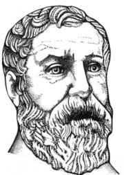

Герон Александрийский

Герон Александрийский (ок. 10 года н.э. – ок. 75 года н.э.) - греческий математик и механик. Занимался геометрией, механикой, гидростатикой, оптикой. Основные произведения: «Метрика», «Пневматика», «Автоматопоэтика», «Механика» «Катоптрика»
Время жизни отнесено ко второй половине I века н. э. на том основании, что он приводит в качестве примера лунное затмение 13 марта 62 г. н. э. Подробности его жизни неизвестны. Герона относят к величайшим инженерам за всю историю человечества. Он первым изобрёл автоматические двери, автоматический театр кукол, автомат для продаж, скорострельный самозаряжающийся арбалет, паровую турбину, автоматические декорации, прибор для измерения протяжённости дорог (древний одометр) и др. Первым начал создавать программируемые устройства: вал со штырьками с намотанной на него верёвкой.[4] Занимался геометрией, механикой, гидростатикой, оптикой. Основные произведения: «Метрика», «Пневматика», «Автоматопоэтика», «Механика» (произведение сохранилось целиком в арабском переводе), «Катоптрика» (наука о зеркалах; сохранилась только в латинском переводе) и др. В 1814 году было найдено сочинение Герона «О диоптре», в котором изложены правила земельной съёмки, фактически основанные на использовании прямоугольных координат. Герон использовал достижения своих предшественников: Евклида, Архимеда, Стратона из Лампсака. Многие из его книг безвозвратно утеряны (свитки содержались в Александрийской библиотеке). Одна из копий его книг, сделанная в XVI веке, содержится в Оксфордском Университете. В средние века многие из его изобретений были отвергнуты, забыты или не представляли практического интереса.